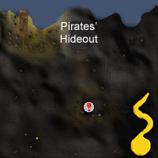
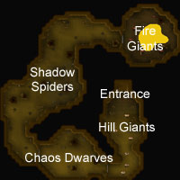
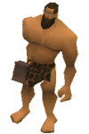
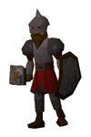
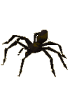

Deep Wilderness Dungeon (Members)
Warning | Introduction | Location | Points of Interest
Quests | Warriors of the Wilderness | Miscellaneous
Quests | Warriors of the Wilderness | Miscellaneous
Warning
The Wilderness is by no means the safest place in RuneScape! This dungeon not only puts you in danger of bloodthirsty monsters, but also the revenants that roam the wastes. For these reasons, please only take items you are willing to lose.
Introduction

Location

The entrance to the dungeon is located west of the Mage Arena.
Aside from the danger of this area, the Mage Arena bank's location is ideal for you to store any loot you get from your kills, if you so wish.
Points of Interest

Quests
There are no quests in the Deep Wilderness dungeon.
Warriors of the Wilderness
|

Hill giants are large and fairly slow, but at Combat level 28, with a large cleaver, they should not be underestimated if you are a similar Combat level. Hill giants have a variety of drops, not forgetting they drop big bones to help your Prayer skill rise.
|

Chaos Dwarfs like causing chaos! Chaos Dwarfs are known to drop the 'muddy key' which opens a chest deep in the Wilderness holding treasures to reward those brave enough to take the journey.
|
|
| Hill giants can be found in the entrance area. | You can find chaos dwarfs in the room after the hill giants. |
|

Found in the deeper areas of the dungeon, past the chaos dwarfs, these spiders can be troublesome for people looking to train. The power of the shadow spider is that they are extremely good at draining Prayer. If you are venturing down here, it may be wise to bring a Prayer restore potion.
|
![[image]](../../img/main/kbase/npc/area_guides/fire_giant.gif) Fire giants are elemental creatures that are most at home around the lava pools that can be found at the end of the dungeon. They are powerful creatures, but wear little armour. What natural toughness they have is a marginal defence against slashing weapons, so those adventurers uncertain of their abilities should try almost anything else.
|
Miscellaneous
- There is a guam leaf spawn point right at the entrance of the dungeon.
- There is a single dose of Attack potion that respawns about halfway through the dungeon.

More articles in
Dungeons
|
|